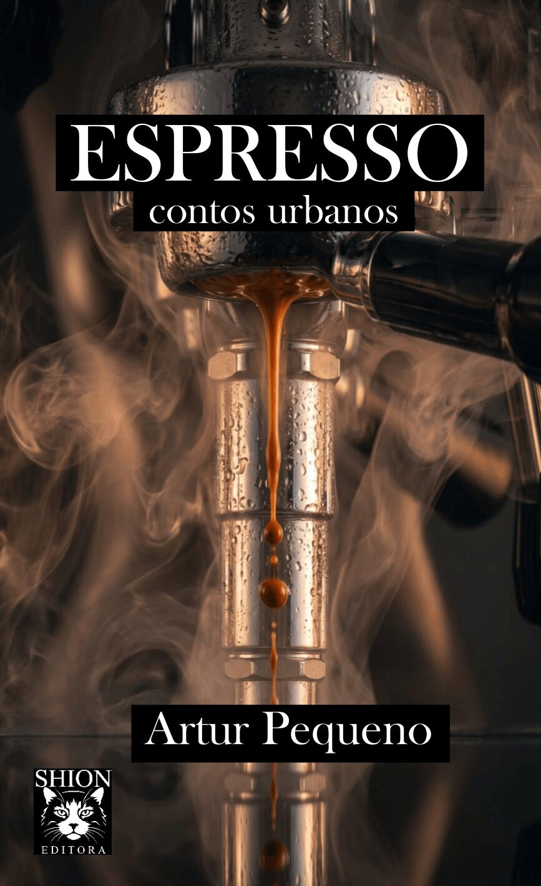

Ristretto
Um poema geometricamente perfeito, de autor desconhecido. Um mergulho inicial rápido, denso e quente.
1ª Edição · Fortaleza, CE · 2026
contos urbanos
Oito histórias de pressão, caos e revelação. Um mergulho na mente de personagens em cenários de complexidade psicológica, onde a pressão interna molda existências inteiras.
por Artur Pequeno

O Livro
Cada conto em Espresso é inspirado em uma forma diferente de pressão interna da mente — mergulhando você na mente de personagens sob cenários de alta pressão psicológica.
Sob a chuva de uma cidade que não dorme, vidas se cruzam sem se conhecerem. Uma jovem viúva, um jornalista correndo contra o tempo, uma operária exausta, uma tatuadora aventureira e um tradutor sem memória. Cada um enfrenta seu próprio quebra-cabeças existencial.
Histórias sobre o instante exato em que a pressão interna altera o sabor de uma existência inteira.
Os Oito Contos
Um poema geometricamente perfeito, de autor desconhecido. Um mergulho inicial rápido, denso e quente.
Teresa, uma jovem viúva, visita o necrotério de um centro de perícia forense. Trava uma batalha com a náusea, o peso da perda e a solidão.
Caio, um jovem entregador, numa tempestade no meio da madrugada. Numa descida, um acidente surreal muda sua perspectiva de si mesmo.
Luíza enfrenta a valsa mecânica e exaustiva de uma máquina gráfica perigosa. Noites sem sono, limites humanos e a luta para sobreviver ao limite do esforço humano num turno regular de trabalho.
Um homem sem memória enfrenta um quebra-cabeças mental. Paradoxos clínicos, café em pó e medicamentos, num quarto que ele não reconhece.
Agora em busca de emprego, Caio se vê preso em um elevador panorâmico com um poderoso executivo. Escuridão total e ruptura sobre um piso de vidro.
Luna, uma tatuadora aventureira, enfrenta uma espera tediosa no mirante de vidro de um aeroporto sob tempestade. Um evento inesperado fragmenta seus pensamentos.
Numa redação às duas da manhã sob a tempestade, um redator sofre um Blecaute. A pressão do estresse extrai seus sentimentos mais amargos.
Cada conto é um mergulho na pressão que molda vidas. Rápido, sensorial e encorpado — exatamente como um bom café.
— Artur Pequeno
Sobre o Autor
Artur Pequeno é natural de Fortaleza, Ceará, onde vive com sua esposa e seus dois gatos. Passou a vida inteira escrevendo — desde redações escolares simples até textos jurídicos.
Encontrou na escrita sua forma preferida de expressão para organizar um perfil mental naturalmente caótico. Toma café com antidepressivo todas as manhãs.
Shion Editora é seu selo de publicações independentes.
Adquira Seu Exemplar
Leve Espresso no bolso ou na estante. Digital para quem quer começar hoje, físico para quem prefere sentir o peso da história na mão.
Ebook venda direta!
Compre seu ebook direto do autor pagando com pix pela Hotmart e ajude a impulsionar o livro!
Edição Impressa
Livro impresso sob demanda. Ideal para quem adora virar páginas e colecionar.
Edição Digital
Leia agora no seu Kindle, celular ou tablet. Entrega imediata e portabilidade máxima.
Compartilhe
Espresso é para quem mergulha em histórias que exploram o caos, a pressão e as revelações silenciosas.